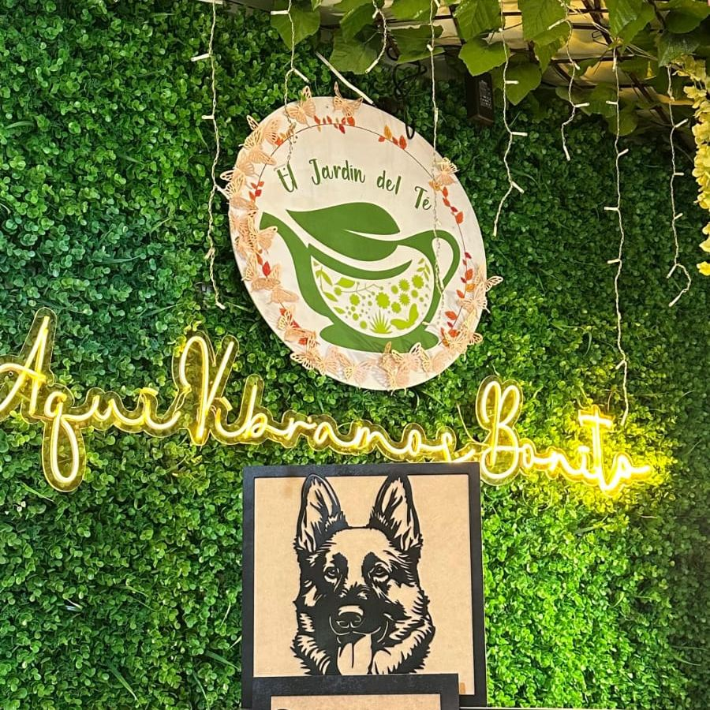
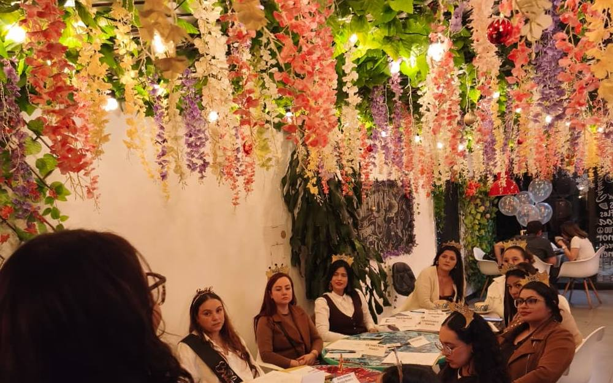
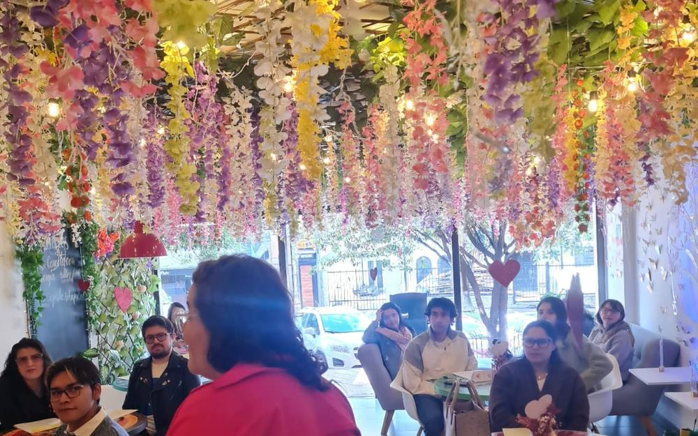
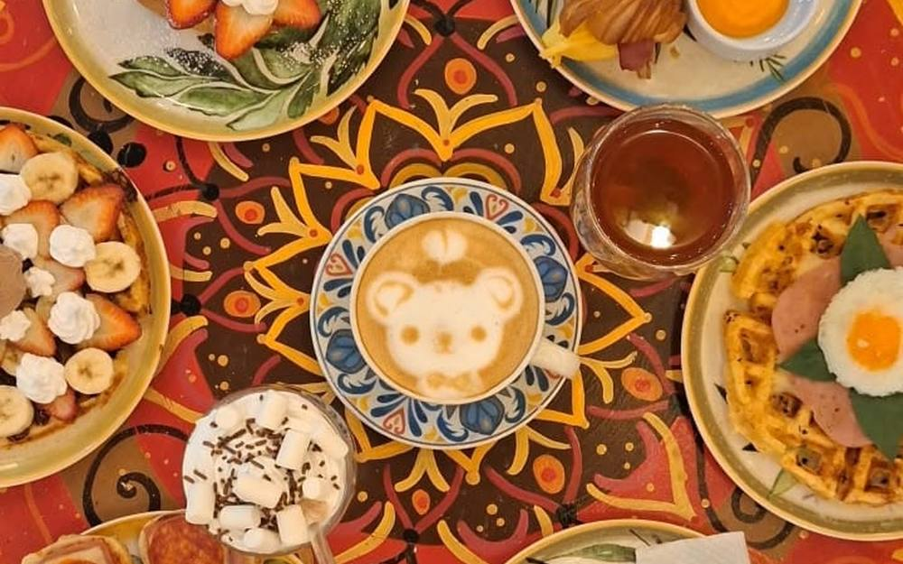
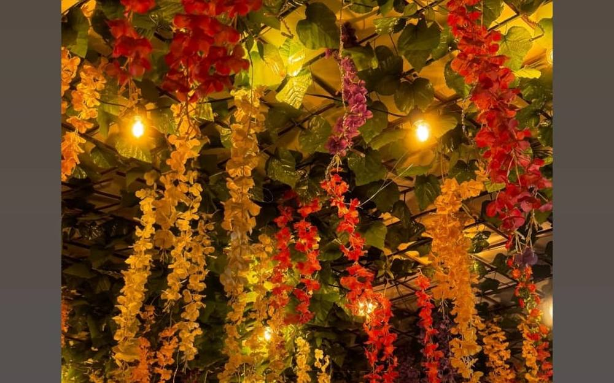

Acerca de Nosotros
En El Jardín del Té creemos que cada infusión cuenta una historia. Seleccionamos cuidadosamente botánicos, flores y hebras del mundo para crear experiencias sensoriales únicas en nuestro salón que transforman tu rutina en un ritual de autocuidado y calma.
Visión
Acá se escribe la visión.
Misión
Acá se escribe la misión.
¿Cómo llegar?
📍 Dirección: Bogotá, Colombia (Chapinero). Calle 71 # 11-12
Horario:
Lunes a viernes: 11:00 AM – 8:00 PM
Sábados y domingos: 10:00 AM – 7:00 PM
Google Maps
Conoce Nuestro Salón






Productos Destacados
Calendario de Actividades
Reserva tu Mesa o Contáctanos
Síguenos en Nuestras Redes
Comparte tu experiencia usando #ElJardinDelTeBogota